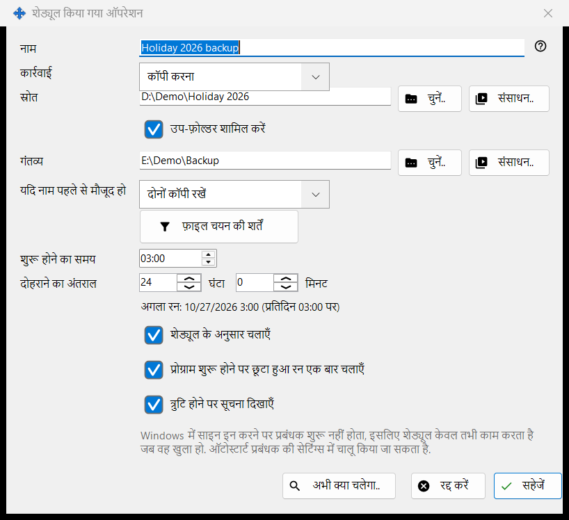
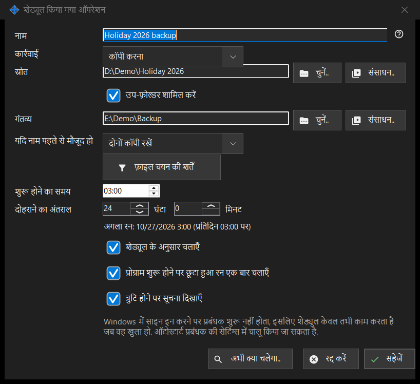

शेड्यूल किया गया ऑपरेशन
यह किस लिए है
एक शेड्यूल्ड फ़ाइल ऑपरेशन को संपादित करती है: दोहराए जाने वाले शेड्यूल पर किसी स्रोत से गंतव्य तक फ़ाइलों को कॉपी करना, स्थानांतरित करना, हटाना या आर्काइव करना। यह Share Manager की सेटिंग्स के शेड्यूल किए गए फ़ाइल ऑपरेशन पृष्ठ पर नया.. या संपादित करें.. से खुलती है, और व्यूअर के फ़ोल्डर मेनू आइटम इस फ़ोल्डर के लिए एक ऑपरेशन शेड्यूल करें.. से भी, जो उस फ़ोल्डर को स्रोत के रूप में भर देता है।


इस क्रम में
- नाम दर्ज करें और कार्रवाई चुनें।
- स्रोत तय करें, और कॉपी करना, स्थानांतरित करना तथा आर्काइव करना के लिए गंतव्य भी, चुनें.., संसाधन.. या Google ड्राइव के माध्यम से के साथ।
- कॉपी करना और स्थानांतरित करना के लिए चुनें कि यदि नाम पहले से मौजूद हो तो क्या हो।
- फ़ाइलें सीमित करने के लिए फ़ाइल चयन की शर्तें खोलें।
- शुरू होने का समय और दोहराने का अंतराल तय करें और शेड्यूल के अनुसार चलाएँ को चुना हुआ रखें।
- अभी क्या चलेगा.. जाँचें और सहेजें दबाएँ।
तत्व
कार्रवाई और नामों का टकराव
कार्रवाई कॉपी करना, स्थानांतरित करना, हटाना या आर्काइव करना है, और विंडो केवल वही पंक्तियाँ दिखाती है जो उस कार्रवाई को चाहिए: हटाना में गंतव्य नहीं होता; यदि नाम पहले से मौजूद हो (छोड़ें, अधिलेखित करें, दोनों कॉपी रखें) केवल कॉपी करना और स्थानांतरित करना में दिखता है; आर्काइव की जाँच के बाद मूल फ़ाइलें हटाएँ केवल आर्काइव करना में दिखता है और मूल फ़ाइलें तभी हटाता है जब आर्काइव वापस पढ़कर जाँच लिया गया हो।
स्रोत और गंतव्य
पूरा पथ लिखें या चुनें.. दबाएँ। संसाधन.. व्यूअर की संसाधन सूची से SFTP सर्वर या नेटवर्क फ़ोल्डर चुनता है और आर्काइव के लिए नहीं दिया जाता, जो केवल सामान्य फ़ोल्डर और Google Drive लेता है। Google ड्राइव के माध्यम से तभी दिखता है जब आप Drive में साइन इन हों या वह पक्ष पहले से उसका उपयोग करता हो। जब उप-फ़ोल्डर शामिल करें बंद हो, तो केवल स्रोत फ़ोल्डर की अपनी फ़ाइलें संसाधित होती हैं। सहेजें सिस्टम और प्रोग्राम फ़ोल्डर, तथा ऐसे गंतव्य को अस्वीकार करता है जो स्रोत के बराबर हो या उसके भीतर हो, और बताता है कि क्या गलत है।
फ़ाइलें हटाना
जब फ़ाइलें हटाई जाएँगी (हटाना, या मूल फ़ाइलें हटाने के विकल्प के साथ आर्काइव करना), तो पंक्ति हटाना: .. बताती है कि वे कहाँ जाती हैं: रीसायकल बिन में, या हमेशा के लिए, कारण के साथ, उदाहरण के लिए नेटवर्क या हटाई जा सकने वाली डिस्क में रीसायकल बिन नहीं होता। ऐसे ऑपरेशन में Enter सहेजता नहीं; सहेजें जान-बूझकर दबाएँ। शेड्यूल किया गया रन कभी कोई प्रश्न नहीं पूछता और दर्ज करता है कि हटाई गई फ़ाइलें कहाँ गईं।
फ़ाइल चयन की शर्तें
शर्तें डिफ़ॉल्ट से अलग होने पर पैनल अपने आप खुल जाता है। फ़ाइल प्रकार: सभी फ़ाइलें, छवियाँ, ऑडियो, वीडियो, दस्तावेज़ (सभी फ़ाइलें बाकी चारों को बंद कर देता है)। संशोधन का समय: पूरी अवधि, पिछले रन के बाद के नए, पिछला एक घंटा, पिछला एक दिन। नाम मास्क और मास्क से बाहर रखें में सेमीकोलन से अलग किए कई मास्क दिए जा सकते हैं, उदाहरण के लिए *.jpg;IMG_??.png, जिनकी तुलना फ़ाइल के नाम से होती है। इससे पुरानी और इससे नई दिन और घंटों में हैं, इससे बड़ा और इससे छोटा MB में। छिपी हुई और सिस्टम फ़ाइलें शामिल करें डिफ़ॉल्ट रूप से बंद रहता है।
शेड्यूल
शुरू होने का समय दिन का समय तय करता है और दोहराने का अंतराल घंटों और मिनटों में अंतराल; पूरे दिनों की संख्या उसी समय पर दोहराई जाती है। उनके नीचे की पंक्ति में अगला रन: समय (नियम) लिखा होता है, या यह: शेड्यूल बंद है: ऑपरेशन केवल मैन्युअल रूप से चलता है. प्रोग्राम शुरू होने पर छूटा हुआ रन एक बार चलाएँ और त्रुटि होने पर सूचना दिखाएँ अलग-अलग विकल्प हैं। एक और पंक्ति बताती है कि शेड्यूल केवल तभी काम करता है जब Share Manager चल रहा हो, और क्या वह Windows साइन-इन पर शुरू होता है; इस विंडो में कुछ भी स्वतः प्रारंभ नहीं बदलता।
पूर्वावलोकन और सहेजना
अभी क्या चलेगा.. उन फ़ाइलों की सूची देता है जिन्हें ऑपरेशन संसाधित करेगा और कुछ नहीं बदलता; रन के लिए इसकी ज़रूरत नहीं है। सहेजें ऑपरेशन को संग्रहीत करता है, या बताता है कि क्या ठीक करना है। रद्द करें आपके संपादन छोड़ देता है।
प्रबंधक सेटिंग · SFTP साझाकरण सेटिंग · एक्सचेंज सर्वर सेटिंग